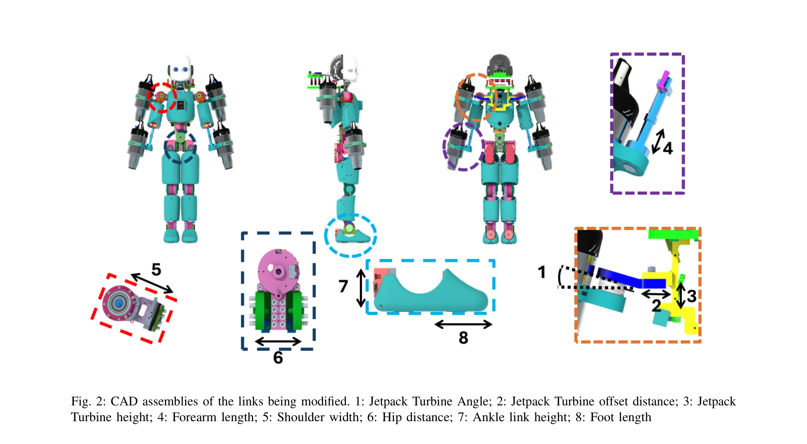
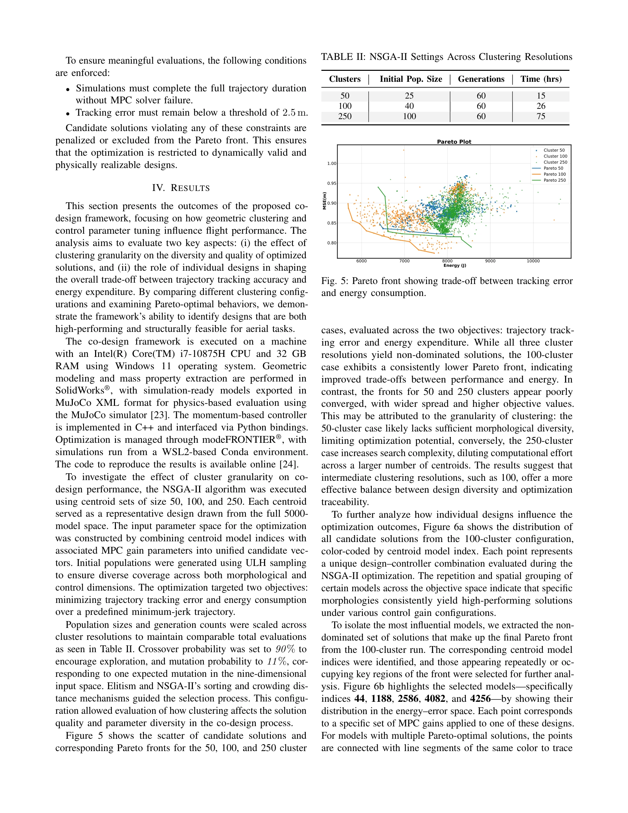
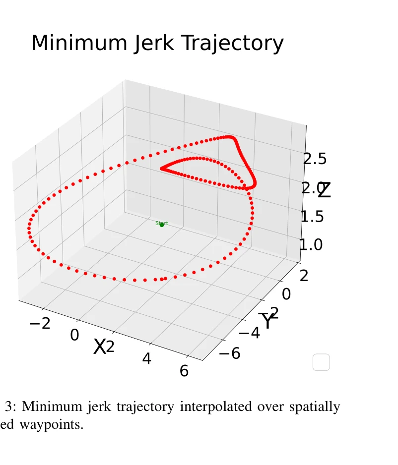

저자: Punith Reddy Vanteddu, Davide Gorbani, Giuseppe L'Erario, Hosameldin Awadalla Omer Mohamed, Fabio Bergonti, Daniele Pucci | 날짜: 2025-09-18 | URL: https://arxiv.org/abs/2509.14935

Fig. 2: CAD assemblies of the links being modified. 1: Jetpack Turbine Angle; 2: Jetpack Turbine offset distance; 3: Jet
CAD 기반 설계-제어 공동 최적화 프레임워크를 통해 제트 추진 휴머노이드 로봇의 형태와 MPC 제어 파라미터를 동시에 최적화하여 비행 가능한 구성을 도출한다.

Fig. 5: Pareto front showing trade-off between tracking error

Fig. 3: Minimum jerk trajectory interpolated over spatially
총평: 본 논문은 CAD 기반 설계-제어 공동 최적화를 제트 추진 항공 휴머노이드에 적용한 것으로, 대규모 형태 공간 탐색과 비행 성능 평가를 체계적으로 통합한 점에서 기여가 크다. 다만 선형화된 제어와 제한된 평가 시나리오는 실제 적용의 견고성을 위해 추가 검증이 필요하다.